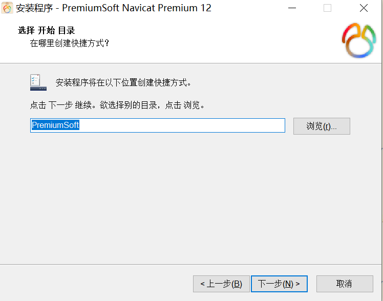
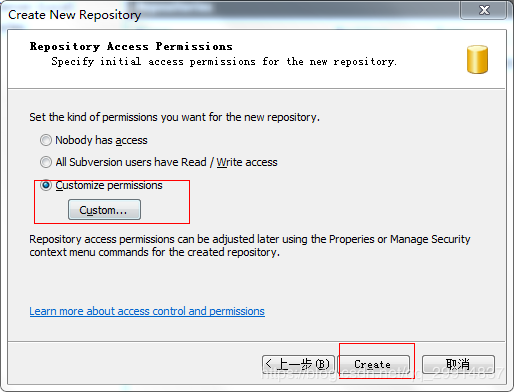
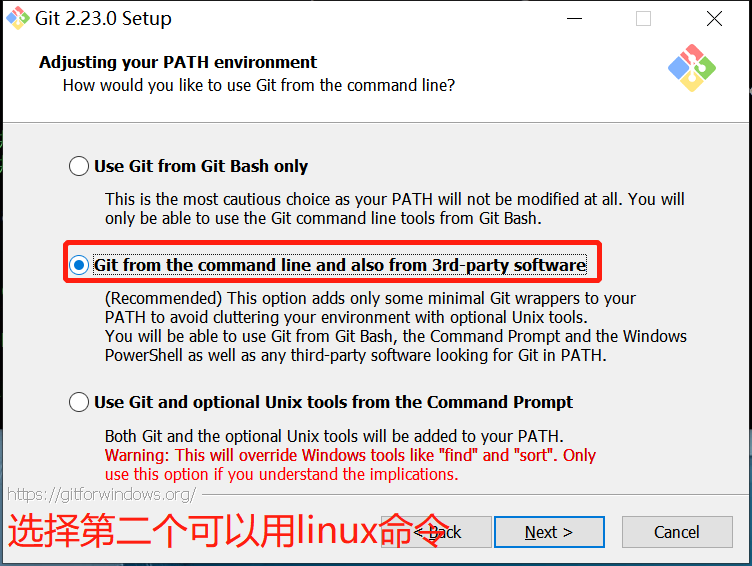
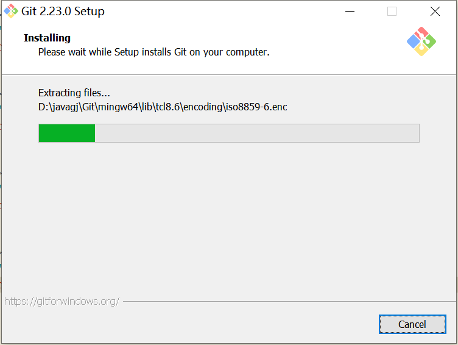

- JDK下载即环境变量配置:
- 1.下载:
- 点击jdk-**_windows-x64_bin.zip进行下载，然后进行解压
- 2.环境变量配置:
- 打开我的电脑，按照如下操作顺序：“鼠标右键-->属性-->高级系统设置-->高级-->环境变量”
- 在选择环境变量过后，我们可以看到如下界面，此时再选择“系统变量-->新建”，此时将会弹出新建系统变量的对话框，在变量名处输入“JAVA_HOME”，在变量值中输入JAVA的安装路径，点击确定；
- 在完成上一步之后，继续在环境变量中双击Path，将会弹出“编辑环境变量”的对话框，此时点击“新建”，输入以下内容：“%JAVA_HOME%/bin”，之后点击确定，JAVA的环境变量就算是配置完成了^_^

- 3.检验环境变量是否配置成功
- 经过上述步骤，我们想要知道是否已经成功搭建起了JAVA的开发环境，于是我们进入DOS窗口，分别输入java、javac、java -version，查看是否有类似下图的显示内容。
- 输入java:

- 输入javac:
- 输入java -version:
- 下载和配置eclipse:
- 1.下载:
- 我们会到官网中找到如下的下载按钮，但默认下载的是Windows操作系统的64位，我们点击Download Packages选择其他类型的下载包
- 选择Eclipse IDE for Eclipse Committers ，按需求选择符合自己操作系统的版本

- 之后我们来到如下界面，默认下载地址是日本的一所大学，我们点击Select Another Mirror选择其他地区的镜像，至于为何，选择距我们较近的地区，下载速度较快。
- （下载为.zip格式的好处，不用安装，容易卸载）
- 选择的是中国科技大学提供的
- 点击后等10多秒会自动下载，之后浏览器弹出的如下界面不用理会
- 下载成功。下载后的文件为eclipse-committers-photon-R-win32-x86_64.zip文件
- 2.安装:
- 点击运行eclipse.exe
- 设置代码的存储位置，安装完成
- eclipse安装server插件
- 找到Help->Install New Software
- 输入框Work with填的是Kepler - http://download.eclipse.org/releases/kepler
- 选择server 插件"JST server adapters extension"安装
- eclipse配置tomcat
- 1.下载
- 选择左侧的Tomcat版本
- 对应着操作系统位数进行下载，下载后会是一个zip压缩包
- 2.配置
- 打开eclipse，单击"window"菜单，选择下方的"Preferences",找到"Server"选项中的"Runtime Environments"
- 点击"add"的添加按钮,弹出如下界面

- 选择对应的Tomcat版本，点击next，如图：
- 上图中，选择Tomcat的路径，以及JRE（使用工作平台默认的，不用做额外添加修改），点击“完成”，配置完毕。
- eclipse配置Maven
- 1.下载
- 这里下载第二个就可以， 最后两个src.tar.gz是源码
- 2.配置maven环境变量
- maven需要新建一个MAVEN_HOME，内容是解压的maven文件路径
- 然后在Path中添加 %MAVEN_HOME%\bin
- 3.测试是否配置成功
- 打开命令提示符，输入 mvn -version(maven所有命令都是mvn)
- 4.在Eclipse上安装maven
- 打开Eclipse点击window>prferences之后会弹出
- 点击确定之后会出现：
- 点击finish之后：
- 5.连接本地仓库
- 第一步：首先需要找到你的maven解压文件夹，然后打开conf子文件夹，然后编辑settings.xml

- 第二步：回到eclipse中点击window再点击preferences
- 卸载mysql
- 打开cmd命令行来卸载MySQL：
- 1.停止MySQL服务
- 2.卸载MySQL
- mysql下载与安装
- 1.下载
- 选择Windows版本进行下载
- 2.解压安装包并配置环境变量
- 将压缩包放在一个合适的盘进行解压，我这里放在了E盘，解压后建议将文件夹重命名为mysql5.7.23
- 配置环境变量：
- 右击我的电脑/计算机，点击属性，打开高级系统设置，点击环境变量
- 变量名：MYSQL_HOME
- 变量值：E:\mysql5.7.23
- path里添加：%MYSQL_HOME%\bin
- 新建data文件夹
- 检查根目录中有没有my_default.ini文件，没有的话，需要自己创建一个，文件名字为my.ini；首先创建一个txt文件，其中内容为：
-
[mysqld] port = 3306 basedir=D:/mysql-5.7.28 datadir=D:/mysql-5.7.28/data max_connections=200 character-set-server=utf8 default-storage-engine=INNODB sql_mode=NO_ENGINE_SUBSTITUTION,STRICT_TRANS_TABLES [mysql] default-character-set=utf8 skip-grant-tables 修改文件名为my.ini； 将该文件放置解压文件的根目录中
- 以管理员身份进入到bin/目录下的cmd
- (1)mysqld -install --安装命令(卸载命令 mysqld --remove)
- (2)mysqld --initialize-insecure --user=mysql -- 初始化
- (3)net start mysql --启动mysql服务(停止mysql服务 net stop mysql)
- (4)登录mysql，键入mysql –uroot –p；直接回车（Enter）
- (5)执行"use mysql"使用mysql数据库
- (6)执行"update user set password=PASSWORD("root") where user='root';"（修改root的密码）
- (7)打开MySQL目录下的my.ini文件，删除最后一行的"skip-grant-tables"，保存并关闭文件。
- (8)重启MySQL服务
- (9)在命令行中输入"mysql -u root -p"输入密码即可成功连接数据库
- 3.查看是否安装成功
- 继续输入mysql --version，查看是否安装成功
- 4.登陆
- cmd进入后，输入mysql -u root -p ，然后输入你刚才设置的密码；quit 退出。
- 下载并安装navicat
- 1.下载
- 提取码：roq3
- 或者我的网盘或者U盘
- 2.安装
- 选择同意协议，然后点击Next
- 设置Navicat的安装路径，至少要保证磁盘有250M的安装空间。在这里，选择D盘的安装路径
- 选择开始目录，默认或者更改都可以，这里直接默认，然后继续进行下一步
- 
- 这一步是是否创建桌面图标，默认是勾选上的。直接保持默认即可，然后选择下一步
- 准备安装。如果前面已经设置好了的话，这一步直接点击"Install"即可，之后便可以进行安装了
- 安装进行中，如下图所示
- SVN
- 1.安装VisualSVN server 服务端安装（windows）:
- (1)下载与本机操作系统匹配的

- 下载完成后是这样的
- (2)安装VisualSVN server

- Location是指VisualSVN Server的安装目录
- Repositorys是指定你的版本库目录
- Server Port指定一个端口
- Use secure connection勾山表示使用安全连接
- 安装完成后会在系统服务中有SVN服务项，并且默认是开机启动
- (3)创建用户
- 打开VisualSVN server Manger

- (4)创建资源库
- 资源库：用户提交文件到SVN，存放文件的仓库

- 这里我们选择自定义权限:
- 
- 2.eclipse配置SVN:
- (2)点击 Help --> Install New Software...
- (3)在弹出的窗口中点击add按钮，输入Name(任意)和Location(插件的URL)，点击OK
- (4)勾选出现的插件内容，一步步安装即可
- (5)next
- (6)next
- (7)下面可能会出现警告，点击install anyway
- (8)最后重启
- (9)右击项目，Team-Share Project

- 3.检出svn仓库项目到eclipse:
- 首先创建svn资源库然后添加地址——>import——>svn——>从svn检出项目——>选择项目
- 4.SVN常规操作:
- (1)提交
- (2)更新
- 在eclipse中右键【shop项目】-【team】-【与资源库同步】，然后在SVN同步窗口中右键【shop项目】-【更新】，即可更新项目
- (3)删除项目的某部分文件
- 先删除不要的文件，然后剩下的步骤同提交项目的步骤，即先与资源库同步，再提交
- (4)解决冲突
- 先更新，再保留合并后的代码（删除多余的注释和代码），再提交即可解决冲突
- Git:
- 1.下载:
- 2.安装:
- 


- 
- 3.设置全局身份:
- (1)打开git Bash
- 桌面右键点击——>git Bash
- (2)写出名字和邮箱
- $ git config --global user.name 'Your name'
- $ git config --global user.email 'email@example.com'
- eclipse会识别出来用户名和邮箱
- (3)创建版本库
- 新建一个Git文件夹
- 在git Bash中跳转到新建的文件夹中
- 在git Bash中新建一个Git目录下的hello文件夹
- 跳转hello页
- 进行对git初始化
- 4.eclipse插件创建本地git仓库
- 创建项目——>Team——>Share Project...

- 5.commit代码到本地git仓库
- 选中需要commit的项目，右键Team——>commit
- 把Unstaged Changes里面的文件，右击add to index，加到下面的Staged Changes里面来才能提交
- commit and push是提交到github，commit是提交到本地资源库
- 6.创建github仓库
- 在命令行中输入ssh-keygen -t rsa -C "your_emial@examle.com"，再点三次回车
- 默认会在相应路径下（/c/Users/lenovo/.ssh/id_rsa）生成id_rsa和id_rsa.pub 、known_hosts三个文件，如下图所示
- 7.SSH Key添加到 码云 或者GitHub中
- 打开github选择new repository创建仓库
- 7.创建SSH Key
- 点击用户名
- 点击Edit profile找到SSH and GPG keys中的New SSH Key
- 打开id_rsa.pub文件，里面的信息即为SSH key，直接复制出来添加到ssh管理即可
- 8.push代码到github远程仓库
- 选中需要push的项目右键Team——>Remote——>Push，URL填写github获取的https地址，user和password填写你的github账号和密码即可
- 9.github中的项目克隆到eclipse